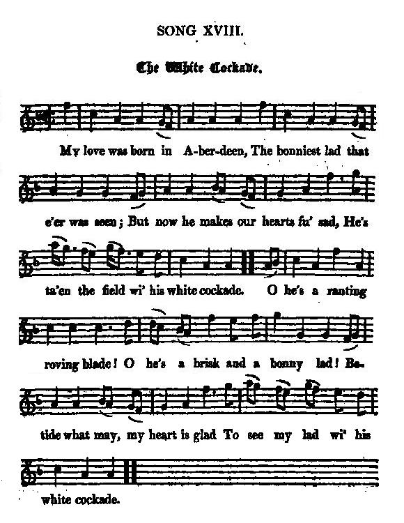
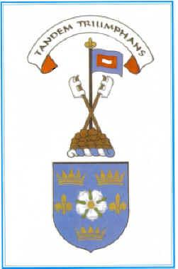

The White Cockade
An Cnota Bàn - La Cocarde Blanche
An Irish Jacobite song translated by Jeremiah Joseph Callanan
followed by
A popular tune adapted by Robert Burns
Tune - Mélodie
"The white cockade"from Hogg's "Jacobite Relics" 2nd Series N°18, (1819)
Sequenced by Ron Clarke (see "Links")

|
To the tune:
The tune in its original form is properly categorized a Scottish Measure. One of the first printings of the air is in Playford's Apollo's Banquet of 1687 where it was called simply a "Scots tune," and another early title seems to have been "The Duke of Buccleugh's Tune." The tune harmonized by Ron Clarke is slightly different from the version found in Jacobite Relics, Second volume (see picture) to which Hogg wrote the following note: "Is a trifling song to a popular tune. Both have been much sung and often published. This is from Mrs J.Scott's MS, and is more eligible than most that I have seen. Probably some lines have been added by singers of late years." Evidently the Ettrick Shepherd did not know that the MS contributed was a copy of Burns's vamp. Source "The Fiddler's Companion" (cf. Liens). |
A propos de la mélodie:
Cette mélodie sous sa forme originale est une "mesure écossaise" au sens propre. On la trouve imprimée pour la première fois chez Playford, dans son "Banquet d'Apollon" en 1687, sous le simple titre d'"Air écossais". Il semble qu'un autre titre ait été à l'origine "L'air du Duc de Buccleugh". Le morceau harmonisé par Ron Clarke est un peu différent de la version tirée des Reliques Jacobites, second volume (cf. illustration) pour laquelle Hogg rédigea la note suivante: "Voici un chant sans prétention sur un air connu. L'un et l'autre sont souvent chantés et publiés. Je le tiens d'un manuscrit de Mme J. Scott et il est mieux formulé que la plupart de ceux que j'ai vus. Il est probable que quelques lignes ont été ajoutées par quelque chanteur moderne." A l'évidence, le "Berger d'Ettrick" ne savait pas que le manuscrit qu'on lui avait envoyé était une copie du poème de Burns. Source "The Fiddler's Companion" (cf. Liens). |
King Charles he is King James's son
Translated from the Irish
by Jeremiah Joseph Callanan (1795 - 1829), the "Cork poet"
|
Excerpt from "Remembering the year of the French: Irish folk history and social memory" by Guy Beiner:
"Though usually associated with Scottish Jacobitism and the failed rebellion of 1745, Irish versions of the song "An Cnota Bàn", were composed in the 18th century by the poets Seân Ô Tuama (ca. 1705-75) and Seân Clârach McDômhnail (1691 -1754), the author of 'Mo Ghile Mear' ". I could not find out if the following poem translates one of these Irish songs and which. Callanan quotes one line from the original: "Taid mo gra fir fi breataib du" . |
Extrait du livre de Guy Beiner, "Souvenir de l'année des Français: histoire populaire et mémoire collective irlandaises"
"Bien que la cocarde blanche soit associée généralement au Jacobitisme écossais et au soulèvement avorté de 1745, des versions irlandaises de "An Cnota Bàn", furent composées au 18ème siècle par les poètes Seân Ô Tuama (vers 1705-75) et Seân Clârach McDômhnail (1691 -1754), l'auteur de 'Mo Ghile Mear' ". Je n'ai pas réussi à déterminer si le poème qu'on va lire traduit un de ces deux chants et lequel. Callanan cite une ligne de l'original: "Taid mo gra fir fi breataib du" . |

|
THE WHITE COCKADE (King Charles)
1. KING CHARLES he is King James's son, And from a royal line is sprung ; Then up with shout, and out with blade, And we'll raise once more the white cockade. 2. 0 my dear, my fair-hair'd youth, Thou yet hast hearts of fire and truth ; Then up with shout, and out with blade We'll raise once more the white cockade. 3. My young men's hearts are dark with woe; On my virgins' cheeks the grief-drops flow; The sun scarce lights the sorrowing day. Since our rightful prince went far away; 4. He's gone, the stranger holds his throne ; The royal bird far off is flown : But up with shout, and out with blade We'll stand or fall with the white cockade, 5. No more the cuckoo hails the spring, The woods no more with the stanch- hounds ring; The song from the glen, so sweet before, Is hush'd since Charles has left our shore. 6. The prince is gone : but he soon will come, With trumpet sound, and with beat of drum: Then up with shout, and out with blade Huzza for the right and the white cockade. |
LA COCARDE BLANCHE (Le Roi Charles)
1. Charles, le fils du Roi déchu, De race royale est issu. Acclamez-le, sortez vos armes! Arborez la blanche cocarde! 2. Mon cher garçon aux cheveux blonds, Nos cœurs battent à l'unisson. Nous t'acclamons, sortons nos armes. Arborons la blanche cocarde! 3. Nos jeunes gens sont endeuillés. Les coeurs des filles éplorés; Le soleil nos prairies a fui Quand notre vrai Prince est parti; 4. Laissant son trône à l'étranger; L'oiseau royal s'est envolé : Acclamez-le, sortez vos armes. Arborez la blanche cocarde! 5. Le coucou se tait au printemps, Dans nos forêts, plus d'aboiements; Les chants dans le glen harmonieux, Cessent: tu vis sous d'autres cieux. 6. Il reviendra ce Prince, un jour, Au son des fifres, des tambours: Des chants et des cliquetis d'armes. Vive le droit et la cocarde! (Trad. Ch.Souchon (c) 2005) |

My love was born in Aberdeen
By Robert Burns, "Scots Musical Museum" Volume III, 1790, No. 272,
entitled The white cockade.
|
In Law's MS. List, we find the mention: "Mr. Burns's old words."
The flying stationers of last century printed the original, which Herd copied into his "Ancient and Modern Scottish Songs", (1776, vol. II, N°179). Burns by a few touches turned it into a decided Jacobite song. Here is the first stanza from Herd:— My love was bom in Aberdeen, The bonniest lad that e'er was seen; O, he is forced from me to gae Over the hills and far away. ' |
Dans la liste de manuscrits de Law, on trouve la mention: "Paroles anciennes de M.Burns."
Les colporteurs du 18ème siècle diffusaient une version imprimée de l'original que Herd a accueillie parmi ses "Chants écossais anciens et modernes" (1776, vol.II, N°179). Burns au prix de quelques retouches en fit un chant résolument jacobite. Voici la première strophe de Herd:- En Aberdeen, c'est là qu'est né, Mon bel et charmant bien-aimé. Mais il doit partir, c'est affreux, Et s'en aller vers d'autres cieux; |
|
THE WHITE COCKADE (My love was born in Aberdeen)
1. My love was born in Aberdeen, The bonniest lad that e'er was seen; But now he makes our hearts fu' sad, He's taen the field wi' his white cockade. CHORUS O he's a rantin, rovin blade, He's a brisk and a bonny lad, Betide what may, my heart is glad, To see my lad wi his white cockade. 2. Oh leeze me on the philabeg The hairy hough and garten'd leg; But aye the thing that blinds my ee, The white cockade aboun the bree. O he's... 3. I'll sell my rock, I'll sell my reel, My rippling-kame and spinning wheel, To buy my lad a tartan plaid, A braidsword, dirk, and white cockade. O he's... 4. I'll sell my rokelay and my tow, My good grey mare and hawkit cow, That every loyal Buchan lad May tak the field wi the white cockade. O he's... |
LA COCARDE BLANCHE (En Aberdeen...)
1. En Aberdeen, c'est là qu'est né, Mon bel et charmant bien-aimé; Mais il a pris, voyez mes larmes, La cocarde blanche et les armes. REFRAIN Oh oui, c'est un traine-rapière, Vif comme l'oiseau sur la branche, Qu'importe, ce dont je suis fière, C'est de voir sa cocarde blanche. 2. J'exulte à la vue du tartan Bourse en fourrure, bas et rubans; Mais ma grande fascination, C'est la blanche cocarde à son front. Oh oui... 3. Je vendrai mon peigne à carder, Et ma quenouille, et mon rouet, Pour lui acheter un beau plaid, La cocarde blanche et l'épée. Oh oui... 4. Je vends mes bobines de lin, Ma vache pleine et mon poulain, Pour qu'avec tous ses camarades Il suive les blanches cocardes. Oh oui... Trad: Chr. Souchon (c) 2005 |
Map
Capture of Edinburgh on the 18th of September 1745
|
The greatest confusion prevailed in Edinburgh where no forces were in a position to resist the Highland army. As the dragoons who were supposed to protect the city had fled on meeting a reconaissance patrol of Highlanders, the people urged the Provost not to defend the town. A meeting was held in the New Church with a great majority calling out for a surrender. A letter of Charles was delivered which the reluctant Provost was forced to read publicly:
"Being now in a condition to make our way into the capital of his majesty's ancient kingdom of Scotland, we hereby summon you to receive us, as you are in duty bound to do; and in order to it, we hereby require you, upon receipt of this, to summon the town-council and take proper measures for securing the peace ... But if you suffer any of the usurper's troops to enter the town, or any of the cannon, arms, or ammunition in it, to be carried off, we shall... resent it accordingly. We promise to preserve all the rights and liberties of the city,...But if any opposition be made to us, we are firmly resolved at any rate to enter the city; and if any of the inhabitants are found in arms against us, they must not expect to be treated as prisoners of war". After this letter was read, a deputation was sent immediately to the Prince, since, while the body of volunteers disbanded, information was received that Cope intended to land his troops at Dunbar and then march to the relief of the city. The deputies returned with a letter of John Murray stating that the Prince's manifestoes were a sufficient capitulation for his subjects to accept with joy and a positive answer was now expected. A second deputation was sent out in the night but Charles refused to receive them and gave orders to enter the city by surprise to save it from the horrors of a battle. A detachment of 900 men under Lochiel and Keppoch was sent to that effect. When the Netherbow Gate opened to give entry to the hackney cab hired by the deputies, a party of McGregors headed by Captain Evan McGregor rushed in and disarmed the guard, followed in a short time by the whole of the Highlanders who took possession of the different gates and stations upon the walls. No violence was offered to any of the inhabitants. Source: Electricscotland.com |
La plus grande confusion régnait dans Edimbourg dépourvue d'une armée susceptible de tenir tête à celle des Highlands. Comme les dragons chargés de sa protection avaient fui en voyant une patrouille de reconnaissance de Charles, les gens imploraient le Prévôt de ne pas défendre la ville. Une réunion fut organisée dans une église où la majorité des participants exigeait en vociférant que la ville se rende. Le Prévôt dut se résoudre à lire publiquement une lettre de Charles:
"Etant sur le point d'entrer dans la capitale de l'ancien royaume de Sa Majesté, nous vous sommons de nous y recevoir comme votre devoir vous y oblige. Vous êtes donc requis, au reçu de la présente, de convoquer le conseil municipal et de prendre les mesures pour garantir la paix de la ville...Mais si vous souffrez qu'aucune troupe de l'usurpateur y pénètre ou emporte les canons, les armes et munitions, nous ... le considérerions comme un outrage fait à nous-mêmes. Nous promettons de conserver tous les droits et privilèges de la ville... Mais si quelque résistance nous est opposée, nous sommes fermement résolu d'entre à tout prix dans la ville; et, dans ce cas, tout habitant qui sera trouvé en armes contre nous ne doit pas s'attendre à être traité comme prisonnier de guerre." Après que cette lecture fut faite, une députation fut envoyée au Prince, le corps de volontaires s'étant dissout, mais la nouvelle étant parvenue que Cope allait débarquer à Dunbar pour marcher en suite au secours de la cité. Les députés revinrent avec une lettre de John Murray disant que les manifestes pibliés par le Prince constituaient une garantie suffisante pour ses sujets qui devaient s'en réjouir et qu'il attendait d'eux une réponse favorable. Une seconde députation suivit pendant la nuit, mais Charles refusa de la recevoir et donna l'ordre au contraire d'entrer dans la ville par surprise pour éviter toute effusion de sang. Un détachement de 900 hommes commandés par Lochiel et Keppoch fut envoyé pour ce faire. Lorsque la porte de Netherbow s'ouvrit pour laisser passer le fiacre dans lequel rentrait la délégation, un groupe de McGregor ayant à sa tête le capitaine Evan McGregor se précipita et désarma la garde, suivit immédiatement par tout le détachement qui s'empara des différentes portes et postes de garde sur les murailles. Aucun acte de violence ne fut commis à l'encontre de la population. Source: Electricscotland.com |
The "Corries" singing "White Cockade -Burns Version"